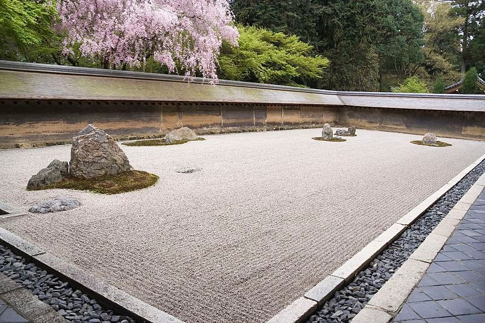
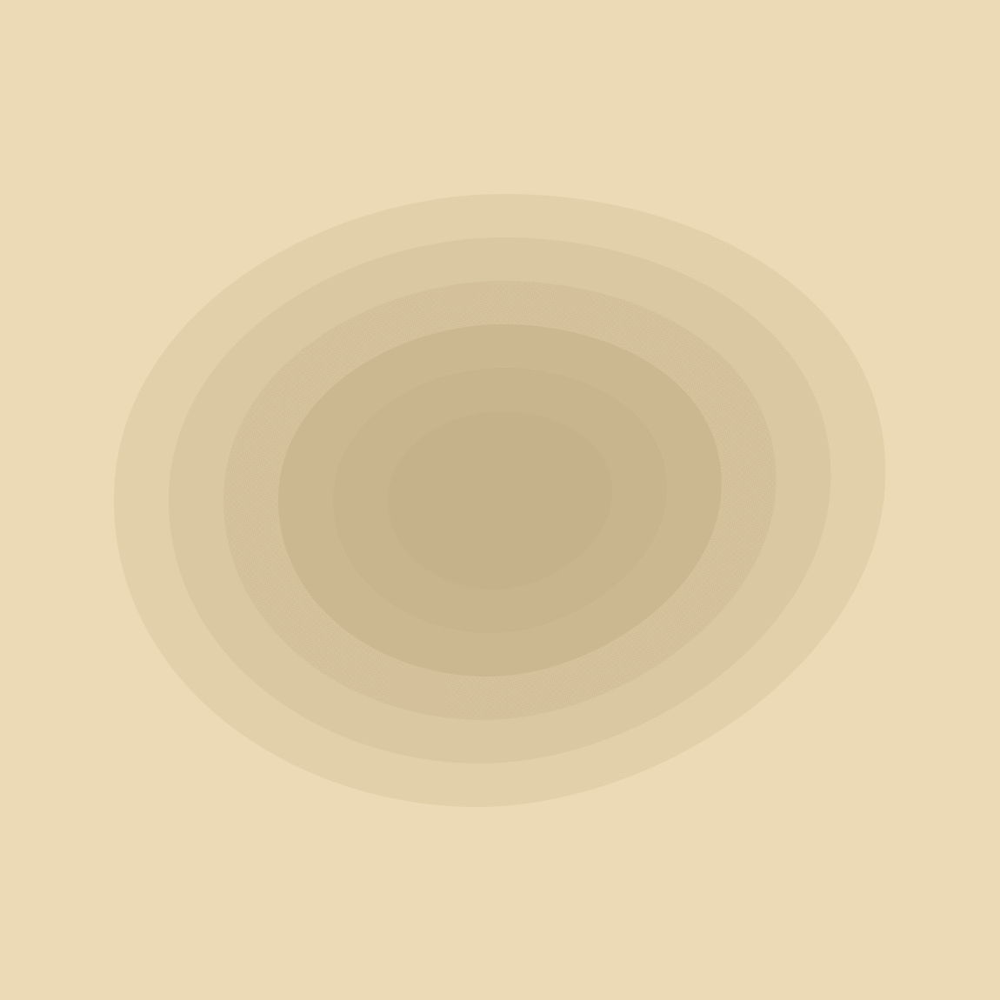
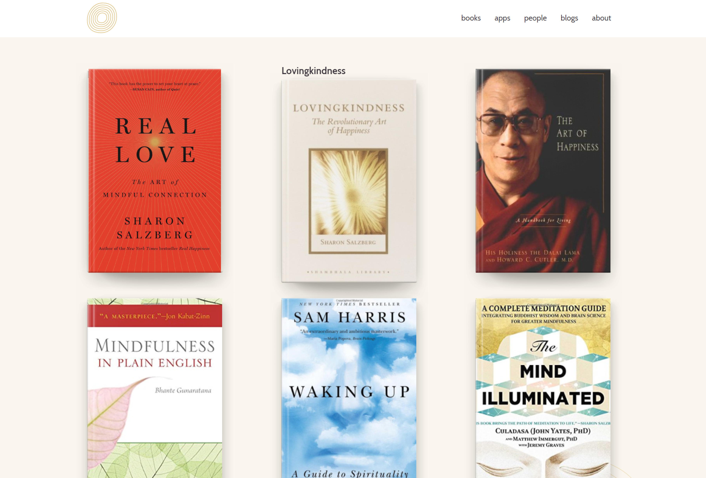
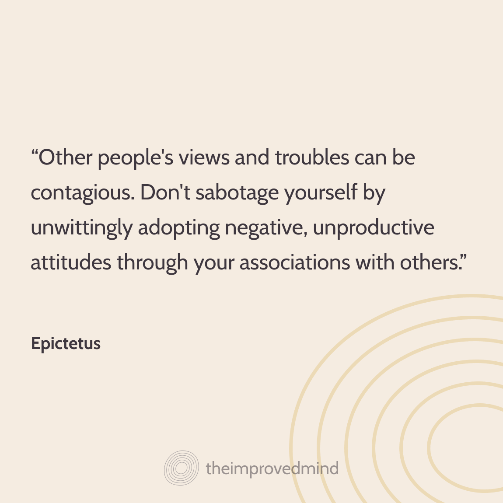

Discovering a visual language
How Karesansui, pebbles, earth colours and Zen culture guided me into the style of the website
The core of karesansui or dry landscaping is creating miniature landscapes, composed of elements from nature and raked gravel or sands that represent the water ripples. These gardens were intended to imitate the gentle essence of nature in a profound and symbolical manner, leaving the viewers to interpret their hidden meanings.
Meditation brought the feeling of interconnectedness with the world in my life.When practicing regularly I’m thinking a lot more about our Earth and about us humans as kind.
This is why I wanted to infuse this vibe into the core of the project. I explored a wide range of colours which are often seen in nature. The shapes were based on flat river stones, which I’ve admired since I was a little kid. Personally, I find a lot of philosophical depth in how these pebbles are being formed for thousands of years by the constant flow of different bodies of water (whether they are rivers, seas, lakes or oceans) and I see a correlating pattern with how our minds are being shaped as well.
Creating the website
In 2019 I had series of discussions with family, friends and acquaintances on the topic of meditation. A reoccurring question raised - the question on how to get started with the practice of meditation. This is the reason why this collection of resources was created. To help people explore the wonderful world of meditation through books, blogs, apps and people. After I had the visual exploration in place I sat down and structured the content of the website. It came out as a very simple, yet useful page that listed resources in an easy-to-perceive manner for people to use. It was then when I decided that in this project I could spend more time on interactions and animations in order to add more visual value to the content.

One of the first elements I did were the elliptical elements in the header of the website. The idea is to showcase the constant flow of our mind. On top of that I add a parallax scroll effect to them in order to make the scrolling experience less monotonous.

Afterwards I came up with the interactions of the rest of the sections. I designed and developed them in a way that present the beautiful covers in an appealing manner. On Desktop, users have the ability to hover and show the Title of the Book, yet for usability purposes the title is always visible on mobile. Applications and Blogs follow the same structure/interactivity.
Expanding the idea
There is so much value in a short, but wise sentences. The older I get, the more I realise how difficult it is to write something concise, yet rich in meaning. The value of a quote is that in just a couple of seconds of reading, your mind is taken into a place where it rarely goes, especially with the current pace of our lives. A quote can make us think, feel, analyse or in a broader sense - be mindful. But how can we be mindful when our minds are occupied with social media, video games and other sorts of entertainment? This is why I decided to create an Instagram profile, hoping that I could prompt such thoughts through the posts I collect and share there. I want to be honest - another benefit of having social media channels for your side projects is gaining popularity, but the core idea of having social media account for this project is making us pause, understand and contemplate on what we read as a break from the habitual scrolling. The design of the social media post is simple - I’m using the different pebble shapes with a colour palette inspired from the colours encountered in our nature - earth, sand, grass, sky. The different placement of the shapes is in order to keep the posts layout lively, rather than it being monotonous.
Future goals
What I’d focus on next is the creation of a monthly newsletter, while maintaining the Instagram profile active. The content of the newsletter would be on the topics of mindfulness, meditation and self care practices I’ve found useful and interesting. Creating a newsletter would be a new challenge for me to tackle, since it would require a lot of thought process and writing skills, yet I’m ready to indulge in this learning process. The value of this project is that it allows me to explore fields of work that I have not indulged in the past, hopefully broadening both my skillset and mind.